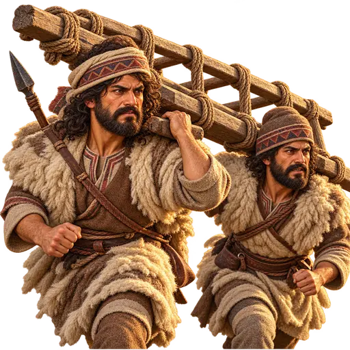
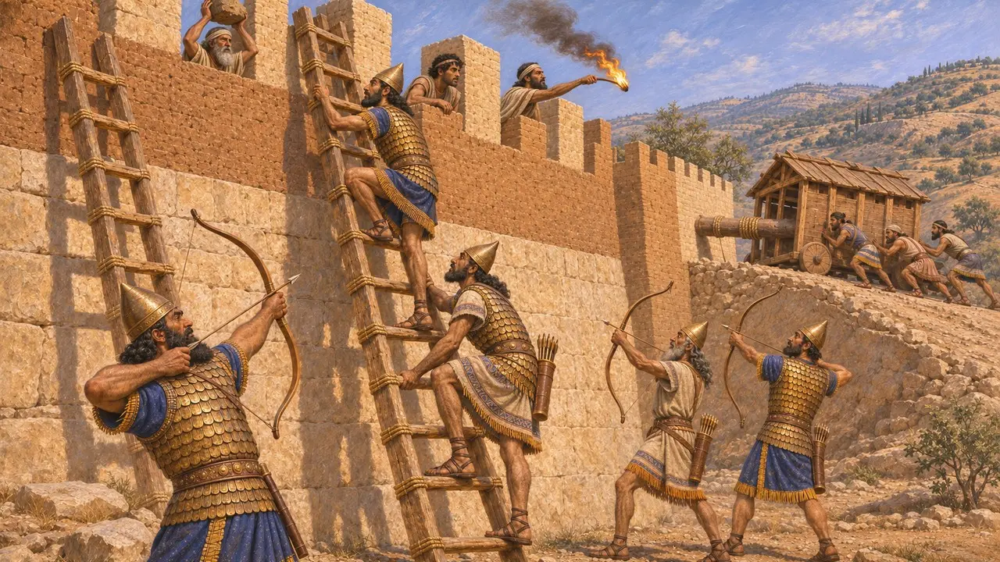
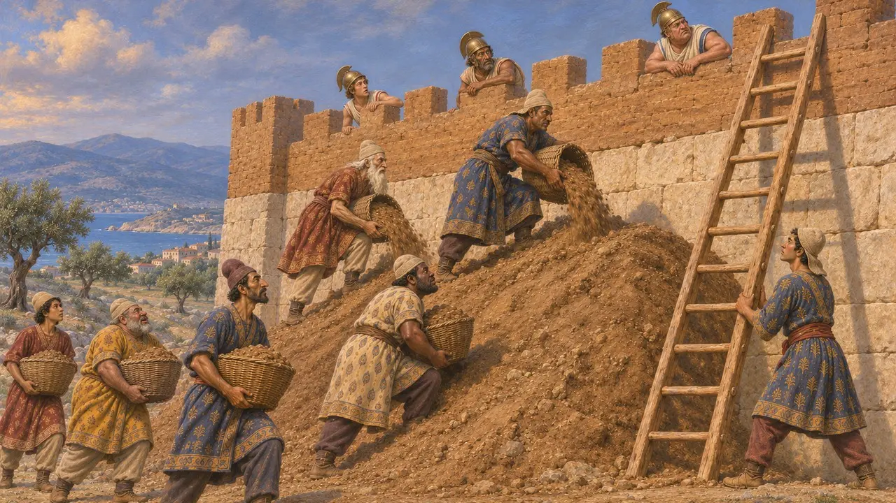
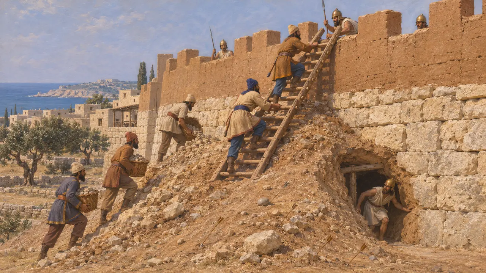
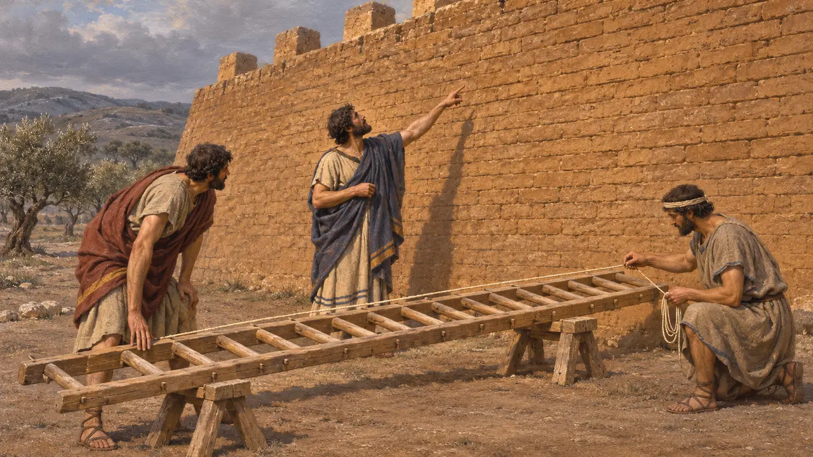
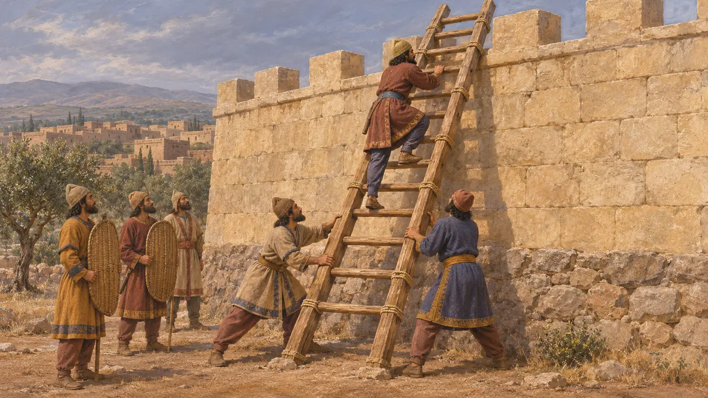

نردبان یورش
نردبان یورش برای بالا رفتن از باروی شهرها، خاور نزدیک و یونان، سدههای 9 تا 5 پ.م.
نردبان یورش سادهترین راه برای گذراندن سربازان از دیوار بود: چارچوبی چوبی و بلند که پیش برده میشد، بر استحکامات تکیه داده میشد و زیر پوشش تیراندازی از آن بالا میرفتند. ساختش ارزان و سریع بود، اما برای مردانی که بر آن بودند خطرناک. سپاهیان خاور نزدیک و یونان نردبان را در کنار خاکریز، دژکوب و نقب به کار میبردند، و پارسیان، وارثان شیوههای محاصرهٔ آشوری، به احتمال زیاد چنین میکردند.
در بازی: در بازی، دو مرد نردبانی را برای دشمنان شاه حمل میکنند؛ چون برپا شود، یغماگران از آن بالا میروند، و مدافعان آن را واژگون میکنند و کمانداران حاملانش را با تیر میزنند. در تاریخ، سپاهیان پارسی بسیار بیشتر محاصرهکننده بودند تا محاصرهشده.

نردبانها در نقشبرجستههای آشوری
در اسنادنقشبرجستههای کاخهای آشوری در نمرود و نینوا سربازانی را نشان میدهند که با نردبان از دیوارهای شهر بالا میروند و کمانداران پشت سرشان به سوی جانپناه تیر میافکنند. در نقشبرجستههایی که سناخریب پس از محاصرهٔ لاکیش در 701 پ.م. در نینوا برپا کرد، دژکوبها را از شیبراههای بالا میرانند و مدافعان سنگ و مشعل فرو میافکنند. پارسیان بعدها بر سرزمینهایی فرمان راندند که این شیوهها در آنجا پرورده شده بود.
D. Ussishkin, The Conquest of Lachish by Sennacherib, 1982

شیوهٔ گشودن شهرها به دست پارسیان به روایت هرودوت
روایت باستانیهرودوت گشودن شهرها به دست پارسیان را بیشتر از راه خاکریز، نقب و غافلگیری شرح میدهد. به گفتهٔ او، هارپاگ شهرهای ایونی را با انباشتن خاک در برابر باروهایشان گرفت، و ارگ سارد هنگامی فرو افتاد که سربازی از صخرهای بینگهبان بالا رفت. او میگوید میلتوس در سال 494 پ.م. با نقب زدن زیر باروها و به کار گرفتن هر گونه ابزار محاصره گشوده شد.
Herodotus 1.84; Herodotus 1.162; Herodotus 6.18

خاکریز محاصره در پافوس کهن
در اسناددر پافوس کهن در قبرس، کاوشگران سطح شیبداری برای محاصره یافتند که پارسیان در برابر دیوار شهر ساخته بودند، احتمالاً در جریان شورش قبرس در حدود 498 پ.م. پیکانها، گلولههای فلاخن و گویهای سنگی در درون و پیرامون انباشت آن پراکنده بود و مدافعان زیر آن نقب زده بودند تا فرو بریزد. این محوطه نشان میدهد که سپاهیان پارسی چگونه چند شیوه را با هم به کار میبستند تا به بالای دیوار برسند.
F. G. Maier and V. Karageorghis, Paphos: History and Archaeology, 1984

سنجیدن بلندی دیوار
روایت باستانینردبان باید درازای درستی میداشت، وگرنه یورش شکست میخورد. توکودیدس میگوید پلاتهایان محاصرهشده در زمستان 428-427 پ.م. ردیفهای آجر دیوار محاصرهٔ دشمن را شمردند تا دریابند نردبانهایشان را چه اندازه بلند بسازند. پولیبیوس، که بسیار دیرتر مینوشت، تأکید کرد که فرماندهان باید بلندی دیوار را حساب کنند و یورشهایی را یاد کرد که چون نردبانها اندازهٔ نادرست داشتند شکست خوردند.
Thucydides 3.20; Polybius, Histories book 9

محاصرهگران پارسی تا چه اندازه چیرهدست بودند
مورد مناقشهنویسندگان یونانی معمولاً گشودن شهرها به دست پارسیان را با خیانت یا نیرنگ توضیح میدهند، که شاید مهارت پارسیان را کمتر از واقع نشان دهد. بسیاری از تاریخنگاران امروزی بر این باورند که پارسیان شیوهٔ محاصرهٔ آشوریان و بابلیان را به ارث بردند و بهخوبی از آن بهره گرفتند. منابع بهندرت میگویند که آیا در محاصرهای خاص از نردبان استفاده شده است یا نه، از این رو نقش دقیق آن نامعلوم میماند.
P. Briant, From Cyrus to Alexander, 2002
منابع
- Herodotus, Histories
- Thucydides 3.20
- D. Ussishkin, The Conquest of Lachish by Sennacherib, 1982
- F. G. Maier and V. Karageorghis, Paphos: History and Archaeology, 1984
- P. Briant, From Cyrus to Alexander, 2002
- Polybius, Histories book 9